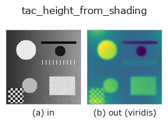

tactile op• Data kinds: image → image
• Call: fullseye.apply(img, "tac_height_from_shading", a=0.5, b=0.5) (2-D model = एक image + दो scalar knobs a,b∈[0,1])

*Figure synthetic 128×128 input पर सच में चलाकर मिला output है। बाईं ओर input, दाईं ओर output। Point clouds ऊपर से देखे गए scatter के रूप में (brightness = z), 1-D series line के रूप में, volumes z दिशा में maximum-intensity projection के रूप में, videos बीच के frame के रूप में, complex images amplitude के रूप में, और जो return values चित्र नहीं बन सकते वे स्वयं values के रूप में दिखाए जाते हैं।*
*Output viridis जैसे pseudo-colour में है (गहरा बैंगनी = कम, पीला = अधिक), ताकि distance, phase, orientation, depth जैसे "मात्राओं के field" पढ़े जा सकें।*
Knob a को बदलकर (0.1 / 0.5 / 0.9, दूसरा knob default पर):
▸ tac_height_from_shading: knob a को बदलने का figure (docs site)
Knob b को बदलकर (0.1 / 0.5 / 0.9, दूसरा knob default पर):
▸ tac_height_from_shading: knob b को बदलने का figure (docs site)
दूसरी images पर भी (synthetic scene / photo / coins। ऊपर की row में inputs, नीचे की row में उनके outputs। Knobs default पर):
▸ tac_height_from_shading: दूसरी images पर output (docs site)
*चौथा column colour (H,W,3) input है। यह op channels को पार किए बिना colour संभालता है (colour channel को तीसरे spatial axis की तरह convolve नहीं करता)।*
Shading gradients के Poisson integration से height/relief map -- GelSight depth reconstruction (और photometric stereo) का integration stage: image gradients को surface slopes p = gain*gx, q = gain*gy के रूप में पढ़ा जाता है और Poisson equation lap(h) = div(p,q) को spectral रूप से हल किया जाता है, h_hat = div_hat / lap_hat, जिसमें discrete Laplacian symbol 2cos(2*pi*u/W)+2cos(2*pi*v/H)-4 है और (अनिर्धारित) DC mode को शून्य पर तय किया जाता है। a = gradient gain (0.25..4.25x), b = gradient field की pre-smoothing sigma (0..3)। आउटपुट [0,1] में min-max normalise करके HxW में वापस fit किया जाता है; constant frame integrate होकर समतल (सब शून्य) relief देता है।
Knobs (मापा गया): a को 0 से 1 तक बदलने पर भी output नहीं बदलता (मापा गया; 5 तरह के inputs पर जाँचा गया)।
Values की तुलना (मापा गया): output को उसी image के अधिकतम से normalise किया गया है (output का अधिकतम हमेशा 1.0 होता है, और input को किसी constant से गुणा करने पर भी output नहीं बदलता)। इसलिए अलग-अलग images के values की तुलना नहीं की जा सकती — समान ताकत वाले feature का value भी इस पर निर्भर करता है कि उस image में सबसे मज़बूत feature कौन-सा है। केवल कमज़ोर features वाली image में noise 1.0 तक उठ जाता है। images के बीच तुलना करनी हो तो किसी साझा reference से फिर से भाग दें।
खाली frame (मापा गया): एक समान brightness वाली image देने पर brightness चाहे जो हो, परिणाम खाली होता है (सभी pixels background 0)। पूरी सफ़ेद हो या पूरी काली, एक जैसा व्यवहार होता है; केवल brightness से कुछ detect नहीं होता।
• Sample data catalog (DL URL / license) — 2-D के लिए skimage.data (BSD/public) + synthetic, 3-D के लिए real data sources (Stanford/PDS आदि) के DL URL।
• Operators का स्रोत और संदर्भ — इस op family के मूल research/methods के स्रोत।
नीचे का program सच में चलता है, यह जाँचा गया है (figure वाला ही input)। Studio की help में यह block buttons बन जाता है, जिनसे इसे वहीं load करके चलाया जा सकता है।
tac_height_from_shading 0.50 0.50
▸ यह pipeline load करें · Load करके चलाएँ
• sim2real_and_alife — py -3.11 examples/sim2real_and_alife.py
image को input के रूप में लेते हैं)identity · gaussian · mean_box · bilateral · unsharp · median · min_filter · max_filter
tactile)tac_contact_mask · tac_surface_normal · tac_pressure_proxy · tac_shear_field
*Provenance: ops.py — 2D operator registry. यह per-op note tools/opdocs.py md से अपने-आप generate होता है (हाथ से edit न करें)।*
© 2026 Kazufumi Furuse — Fullseye operator documentation. Licensed under Apache-2.0.